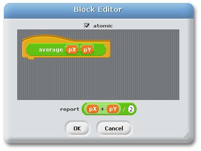
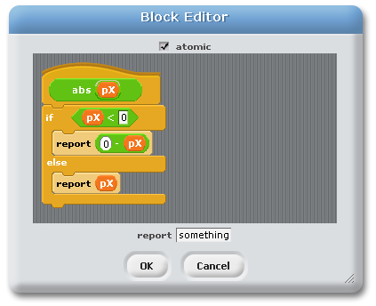
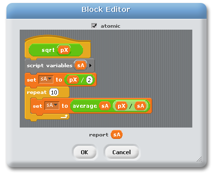
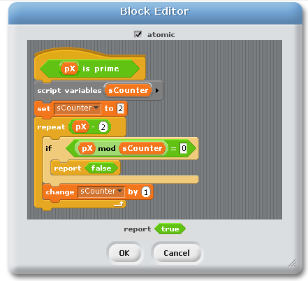
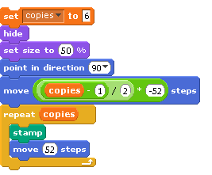

Solutions to In-Class Practice Problems
The solutions given here are the ones we developed in class, based on the practice problems handed out at the beginning of class.
Below are pictures of the solutions, and you can also download the BYOB project file:
- Practice.ypr - this is the BYOB project file that contains all of these solutions. You should save this as a file on your system, and then open it up using BYOB.
Make a reporter block that reports the average of two input parameters.
|  | This was a really simple problem, and just required putting the formula to average two numbers into the "report" slot of the block editor. The main point of this example was to demonstrate different scopes of variables, and to introduce the naming conventions that we'll use in this class: parameters start with the letter p followed by a descriptive name (and script variables will start with an s followed by a descriptive name). |
Make a reporter block that reports the absolute value of its input parameter
|  | This was to illustrate the use of a conditional (the if statement) in the solution, along with using report blocks rather than the default report slot. There are several ways to do this, and students in the class selected the if-then-else block - you could also have used the plain "if" block, and put "pX" into the default report slot. (Note: There is a block provided by BYOB that reports the absolute value of its parameter, but that's not the point - the point is to see how such a block could be implemented.) |
Make a reporter block that reports an estimate of the square root of its input parameter
|  |
The two key components to this solution are the "script" variable and the repeat loop. The formula for how to refine an approximation to the square root function is really not important, but the pattern of the code is: we have an approximate answer, and a way to make the answer better, and so we iterate over that process a few times to get a really accurate approximation. We used the "average" block that we produced ourselves above, which is interesting: once we have created a block, we can use it exactly like any of the built-in blocks. Notes: Just like absolute value, there is a block provided by BYOB that reports the square root, and the built-in block should be used if you really want to compute the square root. It's also interesting to point out that many students think that computers just magically know how to give square roots, and don't think about it; however, that's not the case: inside every computer is an algorithm like this that someone has implemented so that the computer can compute square roots - there's no such thing as magic! |
Make a predicate block that reports whether the parameter is a prime number.
|  | Important points with this example: it's a predicate block, and uses a very common pattern for iteration. When checking if a number "pX" is prime, we need to check whether any of the numbers in the range [2,pX-1] divide evenly into pX. If any of them do, it's not prime; otherwise (if none of them do), it is prime. We know exactly how many values are in this range (it's pX-2), so we repeat that many times, and we have a script variable "sCounter" that counts up - it takes the value 2, then 3, then 4, then 5, ... We initialize sCounter to its first value (2) before the repeat loop, and increment it (change it by 1) as the last thing inside the repeat loop. This is at least the third time you have seen this pattern of loop in this class - and it won't be the last! (Note: There are efficiency improvements that can be made here - don't assume that this is the best way to test whether a number is prime!) |
Write a script that stamps out some number of sprites, horizontally centered around the current location
|  |
The only thing tricky with this script is the formula in the "move" block right in the middle. It's important to know that the sprite we're working with is Alonzo, and Alonzo is 104 pixels wide - so at 50% scale, he's 52 pixels wide. We have this 52 hard-coded into this script in two places, and those would have to change if we used a different sprite (unfortunately, there's no easy way in BYOB to determine the width of a sprite other than to look at the costume and hard-code the width from that). To understand the formula, think how you far you need to move to the left in order for the stamped sprites to be centered. Let's think about a few examples:
|